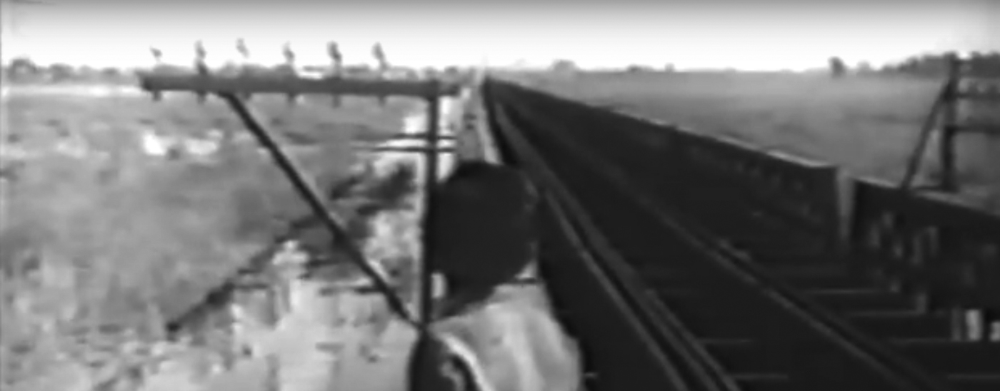

Fernando Birri
En el cine político
El cine político comenzó con el film de Fernando Birri, Tire die (1960), que el mismo realizador denominó la «primera encuesta social filmada». A esa denuncia fílmica sobre la pobreza estructural de un país rico en recursos naturales continuaron Los inundados, 1961, de Birri, en el que refleja con espíritu satírico los tejemanejes de la política lugareña y los absurdos de la burocracia, al tiempo de presenta el drama humano de los protagonistas. Camino a la muerte del Viejo Reales, de Gerardo Vallejo, en 1968, Crónica de un niño solo (1964) y Romance del Aniceto y la Francisca (1967), de Leonardo Favio, son películas de ficción con fuerte referencia en el neorrealismo y la nouvelle vague y una buena dosis de crítica política.
Biografía
Fernando Birri (13 de marzo 1925, Santa Fe) es un cineasta, director y actor argentino. Es conocido como el padre del llamado Nuevo Cine Latinoamericano.
Luego de haber incursionado en el teatro y en la poesía en su ciudad natal, fue a estudiar a Roma al Centro Sperimentale di Cinematografía, de 1950 a 1953. En 1956 regresó a Santa Fe, para fundar el Instituto de Cinematografía de la Universidad Nacional del Litoral.
Realizó su primera película en la Escuela Documental de Santa Fe, se trata del cortometraje Tire Dié.
Fue el fundador de la Escuela Internacional de Cine y Televisión de San Antonio de Los Baños de Cuba, de la que también fue director y desde allí uno de los iniciadores del nuevo cine latinoamericano.
En junio de 2008 donó la obra de su vida (filmes, escritos, pinturas) a un Fondo con su nombre en la Biblioteca de la Universidad Brown, asociada con la RISD Rhode Island School of Design, Providence, Estados Unidos.
El 4 de junio de 2010 recibió el premio de honor del Festival Internacional de Cine de Innsbruck (Austria), en reconocimiento de su trayectoria e influencia sobre el festival. Se realizó en su honor una retrospectiva bajo el título "Soñar con los ojos abiertos" con sus filmes más destacados.
El 7 de junio de 2010 recibió el Cóndor de Plata a la trayectoria, de la Asociación de Cronistas Cinematográficos de la Argentina, en reconocimiento a su trayectoria como director.
Tiré die
Tire dié (1960) es un documental argentino realizado por Fernando Birri. El mediometraje, enunciado como "película de encuesta", muestra el estilo de vida de la clase baja de las ranchadas en Santa Fe, Argentina. Fernando Birri, nacido en Santa Fe en 1925. En 1950 se trasladó a Roma para estudiar en el Centro Sperimentale di Cinematografia, hasta 1953. En 1956 regresa a Santa Fe para formar el Instituto de Cinematografía en la Universidad Nacional del Litoral, y empezó filmar su proyecto, Tire dié, sobre un periodo de tres años. El documental se desarrolla alrededor de un conjunto particular de niños pobres que todos los días persiguen un tren suplicando para céntimos. El título, Tire dié es un homónimo de la frase tire diez ("tire diez centavos"). Los niños persíguen el tren lento todos los días y corren a lo largo para pedir monedas de los pasajeros que se asoman por curiosidad. En la película, los niños dicen que cuando saben que un tren viene de Buenos Aires, se atreven a gritar tire cincuenta. La película también entrevista un número de adultos, cuyas voces están dobladas por actores.
La película se estrenó dos años después de finalizada en 1958, el cual le dio tiempo a Birri para filmar y estrenar la que se convirtió en su primera película, La primera fundación de Buenos Aires en 1959. Un año más tarde, Tire dié se estrenaba. La critica aclamó a Birri y despejó el camino para proyectos más lejanos de naturaleza similar, como Buenos Aires, Buenos Aires (1960) y la más reconocida Los inundados (1961), con cual ganó el premio a Mejor Primer Película del Festival de Venecia.